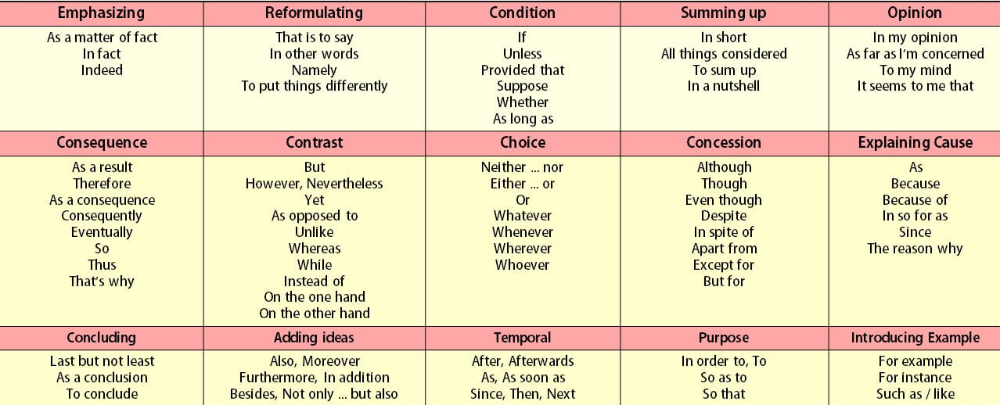
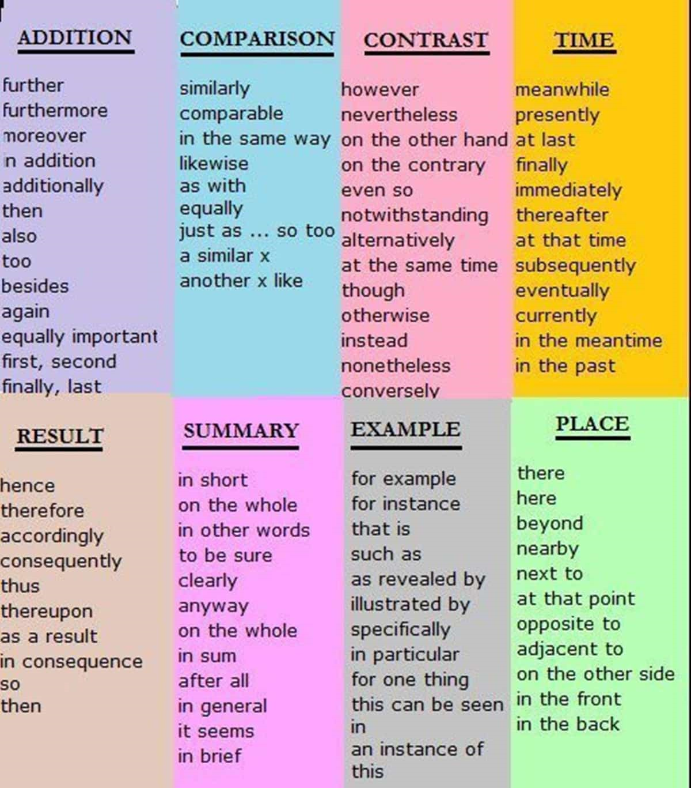
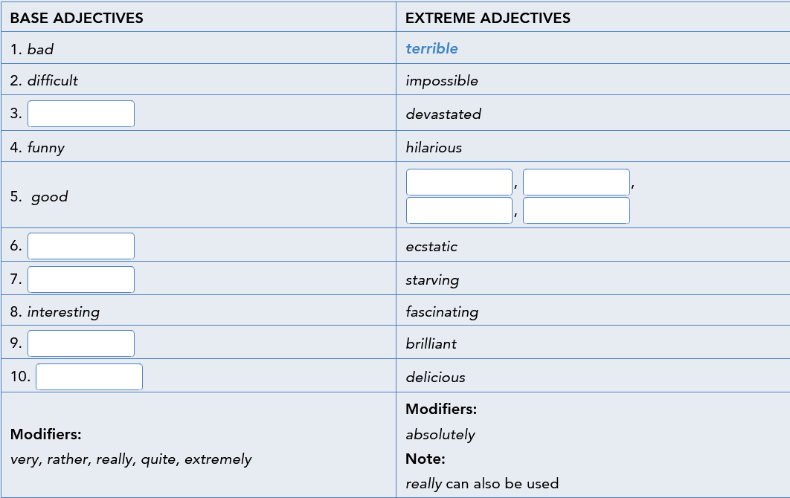

Present tenses - question forms - to make questions, put an auxiliary (do, be, have) before the subject of the main verb - Present Simple - yes/No questions - Do + I/you/we/they + speak English? - Does + he/she/it + speak English? - Wh- questions - What languges + do + I/you/we/they + speak? - What languges + does + he/she/it speak? - Subject questions - Who + speaks + English? - Present Continuous - yes/No questions - Am + I + working now? - Are + you/we/they + working now? - Is + he/she/it + working now? - Wh- questions - What + am + I + doing? - What + is + he/she/it + doing? - What + are + you/we/they + doing? - Subject questions - Who + is working + now? - Present Perfect - yes/No questions - Have + I/you/we/they + swum in a river? - Has + he/she/it + swum in a river? - Wh- questions - What + have + I/you/we/they + done? - What + has + he/she/it + done? - Subject questions - Who + has swum + in a river? - when you ask about the subject, you do not use the Present Simple auxiliary do/does - Who inspires you? Verb + -ing or verb + to + infinitive - verb + ing - used with following verbs - verbs expressing emotions (enjoy, hate, like, love) - "I hate wearing a suit and a tie." - particular verbs and verb phrases (avoid, can"t stand, consider, spend time, prefer) - "Laura prefers texting to sending emails." - verb + to + infinitive - used with following verbs - most verbs expressing plans, decisions, intensions and willingness (hope, want, decide, choose) - "Tim wants to study Law." - particular verbs (agree, cannot afford, manage, need, pretend, refuse) - "Why do you refuse to lend me your shoes?" - verbs expressing preferences (would like, would love, would prefer) - "I would like to stay at home today."
So and such - either used when we want to stress the noun they precede or when we want to stress an adjective or noun and focus on the consequences of events described in the main sentence clause - "My younger sister has got so many toys that my parents want to give some away." - pronoun so - formation = so + adjective - It is used before - adjectives without nouns - "My aunt Tanya is so inspiring." - quantifying expressions (many/much) followed by a noun - "So many friends are coming to the party." - pronoun such - formation = such + noun phrase - It is used before - adjectives followed by nouns - the following nouns: - "Such people will always help you in need." - "Angela always has such luck." - Information about it - the indefinite article a/an is used if it precedes a countable singular noun - "Uncle Tom has such an intersting life." - we do not use any article if it precedes a countable singular form - "Every morning Josh goes for such long walks with his dogs." Adjective + preposition - used to give information about yourself - I am crazy/excited/mad/passionate/serious/worried about - I am bad/good/useless at - I am involved in - I am afraid of - I am keen on - I am dissapointed/obsessed with - Questions can end in a proposition - What subject are you good at?
A pearsonal email/letter - start writting with a friendly greeting (Dear Nick,/Hi Jo) - do not use full forms, use contractions (you"re (not you are)) - occasionally use emotions (💀) or abbreviations (Bye 4 now) - ask questions to show you want a reply (What about you?) - finish writting with a friendly goodbye (All the best)
Interest
| Statement | Showing interest |
|---|---|
| I have got loads of friends and they want to meet you | Really? that is cool! |
| I have just got one sister. She is a model | Tell me more about her |
| She is training to be a pilot | Wow, that is interesting |
| Statement | Saying you are similar |
|---|---|
| I love travelling and meeting new people | I love it aswell |
| I do not really like rock or heavy metal | Me neither |
| Statement | Saying you are different |
|---|---|
| I am not very keen on tea | Well I am |
| I do not like travelling | Don"t you. Oh, I do! |
| I play the violin | Really? I do not |
Past Continuous and Past Simple - Past Continuous - its usage - used to describe a longer background scene in a story, during which other main events (described in the Past Simple) took place - "Someone was sitting at desk when the lights went out." - used to talk about a longer action (Past Continuous) that was interrupted by the shorter action (Past Simple) - "While Meg was texting a message to her friend, she dropped her phone." - used to talk about actions in progress at the same time - "While Ann was doing some experiments, Terry was taking some measurments." - formation - Affirmative sentence - I/he/she/it + was + watching TV. -you/we/they + were + watching TV. - Negative sentence - I/he/she/it + was not + watching TV. - you/we/they + were not + watching TV. - Yes/No questions - Was + I/he/she/it + watching TV? Yes, I/he/she/it was/No, I/he/she/it was not - Were + you/we/they + watching TV? Yes, you/we/they were/No, you/we/they were not - Wh- questions - What + was + I/he/she/it + watching? - What + were + you/we/they + watching? - Subject questions - Who + was + watching TV? Used to - the usage of used to - past states or actions that are no longer true - "I used to play tennis a lot. (I do not play either very often or anymore) - When we talk about single actions that happened once, we use Past Simple (not used to) - Kim bought a new mobile phone yesterday. - formation - Affirmative sentence - I/you/he/she/it/we/they + used to + swim. - Negative sentence - I/you/he/she/it/we/they + did not use to + swim. - Yes/No questions - Did + I/you/he/she/it/we/they + use to + swim? Yes, I/you/he/she/it/we/they did/No, I/you/he/she/it/we/they did not - Wh- questions - Where + did + I/you/he/she/it/we/they + use to + swim? - Subject questions - Who + used to + swim?
Linkers and time expressions - Conjuctions - you use when/while to link things that happen at the same time (conjuction + subject + verb) - "While they were working for NASA, they earned less than their white collegues - you use after/as soon as/before/when to link things that happen in order (conjuction + subject + verb) - "When the film came out, Johnson met the actress who played her." -Prepositions - you use during to say when something happens (during + noun) - "during the 1950s and 1960." - you use until (till) to talk about a state that continues up to a point in time (until (till) + noun) - "Segregation continued until the mid-1960s." - you use by to talk about an action that happens at or before a point in time - "Segregation stopped by the late 1960s." Informal linkers - in narrative stories, these linkers are used - I have to say or I must admit to emphasise the next piece of information - Anyhow or anyway to change the subject or move the story on - Actually or In fact to show that the next piece of information is surprising - And, but, because, so to join parts of sentences - Then, when, while, during to make the order of events clear
A story - set the scene - I was twelve years old when ... - It was late in the evening when ... - I was in the classroom when ... - Use questions, short dramatic sentences and occasional exclamation marks to show surprise or excitement - What was going on? - What a surprise! - It was awesome! - We were in trouble - Use adverbs to add interest - All of a sudden/suddenly/Luckily/Unfortunately - ... really (good) - ... completely (lost) - ... incredibly (smart) - Use a summarising statement to begin or end your story - I will never forget the day i first saw .../the time I decided to .../when I first went .../... was an event I will never forget
Telling a story - Use the right tenses - Past Continuous for the "background" - "The sun was shining and I was enjoying myself." - Past Simple for the "problem" and the "main events" - "The weather changed and I could not see the path." - Use linkers - Beginning: To start with/At first - middle: Suddenly/All of a sudden/Luckily/Fortunately/Unfortunately - End: In the end/Finnaly/Eventually - Say how you felt - I was excited/frightened/surprised/shocked/worried, etc. - Make a "final comment" - "It was the best/worst day of my life!" - "I will never do it again." Listening to a story - Neutral response - Really?/Oh dear./Oh no - Strong response - That sounds amazing/funny/frightening. - What a great story/a nightmare! - Respond with questions - What happened? - What did you do?
Comparative and superlative adjectives - ways to compare things and persons - comparative - used to compare two people and things - formation: adjective + than - "Daniel Craig is taller than Zac Efron." - It may be used with following - a bit ("Reading a book is a bit easier.") - much/far ("This is much more expensive because it is more complicated.") - superlative - used to show that person or thing has the highest degree of a certain quality - "Sean Connery is the tallest of the three James Bond actors." - other ways to compare things and persons - (not) as + adjective + as - "Rupert Grint is not as famous as Daniel Radcliffe." - (just) as + adjective + as - used when two people or things are the same - "The plot is as complex as it can be." - not as + adjective + as - used when two people or things are different - "For me, talent shows are not as interesting as game shows."
| Adjectives | Comparative | Superlative | |
|---|---|---|---|
| one-syllable | young | younger (than) | the youngest |
| one- and two-syllable ending in -y | pretty | prettier (than) | the prettiest |
| two-syllable or longer | attractive | more attractive (than) | the most attractive |
| Irregular | good | better (than) | the best |
Present Perfect with just, already, (not) yet and Past Simple - Present Perfect - its usage - used to talk about actions which happened and finished in the past, but we do not know when exactly - "I have read a lot of biographies and autobiographies." - used to talk about actions which happened in the past and the result is visible in the present - "Eddie has painted his first potrait." - Common time expressions used with Present Perfect - expression ever is used in questions - "Have you ever been to an art gallery?" - expression never is used in negative sentences - "My grandparents have never left England." - expression since then - "She won The X Factor in 2006. Since then she has sold millions of albums." - expressions already and just are used mainly in affirmative sentences between have and the Past Participle verb form - "I have already seen it." - "They have just left." - expression yet is used in negative sentences and questions and always at the end of the sentence - "I have not seen her yet." - time expression Past Simple is used if we want to say when something happened or with questions with when - "She won a Grammy in 2016." - "When did you see Blur play live?"
too and not enough - both are used to make comparisons and talk about a degree of a quality - too - means "more than you need or want" - its usage - before adjectives - "The painting is too dark i cannot see what is in it." - with nouns with expressions to many/much - "There are too many horror films at the cinema these days." - in an affirmative sentence (to create negative meaning) - "The plot is too complex." (I cannot understand it) - with negation (to create positive meaning) - "The plot is not too complex." (It is easy to understand) - (not) enough - enough means "the amount you need" - "We had enough photos to prepare." - not enough means "less than you need or want" - "We did not have enough photos to prepare." - its usage - after adjectives - "The special effects were not realistic enough." - before nouns - "There are enough cooking programmes on TV nowadays." Adjectives to describe films, plots, screenplays etc. - We use - superb to mean fantastic - engaiging to mean something pleasant - amusing to mean funny - thrilling to mean something that makes you excited and makes you want to do something important - convincing to mean something which makes you believe something is right - predictable to mean somethin not surprising or you expected to happen
A film review - Background information - Directed by Denis Villeneuve - starring Ryan Gosling and Harrison Ford - The film was nominated for/was awarded the... - This action-adventure/romantic comedy/thriller/historical drama/animated feature film ... - The film is a sequel of/a remake of/an adaptation of - It is based on the true story of/the novel ... - It is set 30 years later/during the etc... - The action takes place in the future/in a village/in ... - Ryan Gostling/the actor stars as - Plot - At first/Then/After that/Later on/Unfortunately, etc. - Main characters - The characters are skillfully played/are not very convincing - Harrison Ford gives a great performance as etc. - Different aspects of the film - The screenplay holds your attention from beginning to end - The special effects are amazing - The plot is fascinating/a bit boring/slow-moving - The photography/soundtrack is amazing - Summary of opinion and recommendation - For me the word that best describes this movie is etc. - It is one of the best science-fiction films i have ever seen - In my view, it is suitable for adults and teenagers/kids alike
Describing a photo - Beginning a description - In this photo, I can see etc./there is etc./there are etc. - This photo shows etc. - Saying where (place) - There are ... so I think they are in a street/in an art gallery/at a concert, etc. - Saying where (in the photo) - in the background/in the middle/in the foreground/on the left/on the right/in front of/behind/next to - Speculating - He/She looks shy/bored/tired, etc. She is probably ... - Perhaps/Maybe/I imagine/I am sure he is very proud - Giving your opinion - In my opinion, ... - I do (not) think ... - Personally, ...
Present Perfect with for and since - used to talk about unfinished situations that started in the past and continue in time "up to now" - expressions = how long, since, for - you use expression how long to ask about the length of time "up to now" - "How long until you work for CS" - you use expression since when the answer is a point in time - "I was here since it started in 2004" - you use expression for when the answer is a period of time - "I worked with people from all over the world for more than 10 years." - questions are formed using How long ... - "How long have you lived in this house? Future forms (Present Continuous, be going to and will) - Present Continuous - used for future arrangements which have been already been planned and prepared - you often mention a time, a date, or a place - "I am throwing a birthday party on the 25th." - Be going to + infinitive - used for future intentions which may still be changed - you have already decided to do something and you tell people about it - formation - Affirmative sentence - I + am + going to sleep - he/she/it + is + going to sleep - you/we/they + are + going to sleep - Negative sentence - I + am not + going to sleep - he/she/it + is not + going to sleep - you/we/they + are not + going to sleep - Yes/No questions - Am + I + going to sleep Yes, I am/No, I am not - Is + he/she/it + going to sleep? Yes, he/she/it is/No, he/she/it is not - Are + you/we/they + going to sleep? Yes, you/we/they are/No, you/we/they are not - Wh- questions - When + am + I + going to sleep? - When + is + he/she/it + going to sleep? - When + are + you/we/they + going to sleep? - Subject questions - Who + is + going to sleep? - will + infinitive - used for spontaneous decisions made at the moment of speaking - you often use expressions like "I think i WIll..." or "I will probably..." or "Don"t worry, I will..." - formation - Affirmative sentence - I + will + go to sleep - he/she/it + will + go to sleep - you/we/they + will + go to sleep - Negative sentence - I + will not + go to sleep - he/she/it + will not + go to sleep - you/we/they + will not + go to sleep - Yes/No questions - Will + I + go to sleep Yes, I will/No, I will not - Will + he/she/it + go to sleep? Yes, he/she/it will/No, he/she/it will not - Will + you/we/they + go to sleep? Yes, you/we/they will/No, you/we/they will not - Wh- questions - When + will + I + go to sleep? - When + will + he/she/it + go to sleep? - When + will + you/we/they + go to sleep? - Subject questions - Who + will + go to sleep?
Adverbs - used to modify and define verbs, adjectives and other adverbs - adverbs with verbs ("Are you sitting comfortably?") - adverbs with adjectives ("The living room is really beautiful.") - adverbs with other adverbs ("We drove incredibly slowly because of the traffic jams.") - their formation - adjective + -ly (slow - slowly) - adjective + -y, (unbelievable - unbelievably) - adjective + -ily (lucky - luckily) - some adverbs and adjectives have the same spelling (hard, fast, late, early) - adverb is never put between a verb and its object - "He speaks well English." - Comparasion - you form comparative with more - "Alice speaks more clearly than John." - some of the adverbs are irregular - well - better - hard - harder - you form superlative with the most - "Alice speaks the most clearly." - adverbs of degree - used before both adjectives and adverbs to modify their meaning - a little/a bit/slightly - "Sue says that living in the suburbs is slightly better now." - quite/rather/pretty - "Since we redecorated the room, it looks pretty good." - really/extremely/completely - "You need to move it extremely carefully because it is an antiue." Punctuation - commas - usage of commas - used between the names of cities and states or countries - used to separate three or more nouns in a list - used to seperate clauses in a sentence when they are joined by but or so - used to seperate and if-clause from the main clause when the if-clause is the first one in a sentence - used after time expressions at the beginning of a sentence
A blog entry - Say when and(/or why you visited - Last week/weekend/month/... - I went to .../i visited my cousin/friend/aunt in ... - Introduce the place - ... is a small/large city in ... - ... is a popular tourist destination. - ... is famous for its ... - Give impressions or opinions - It is a busy/interesting/lovely place - Most people seem to/tends to ... - According to ... - I thought it was great/wonderful/a bit boring. - It (the food) was delicious! - Make recommendations - I would recommend ... - For visitors, ... is a must.
Suggestions -Making suggestions - Do you fancy (going) etc.? - Let"s go etc. - How about (going) etc. ? - We could (go) etc. - (I think) we should (go) etc. - What about (going) etc. ? - Why do not we (go) etc. ? - Agreeing with suggestions - (That is a) good/great idea! - (That) sounds good/great! - Why not - Disagreeing with suggestions - (I am sorry) I am not keen on etc. - i do not really like etc. - I would rather (go) etc. - I am not sure about that - Let"s (go) etc. instead
First Conditional - used to talk about the possible results of an action - sentences refer to the future - "If I tell them the truth, they will not believe me." - To form First Conditional, we have 2 choices - Formation A: condition (If + Present Simple) + comma (,) + result (will (not) + infinitive) - "If he works hard, he will pass his exams." - Formation B: result (will (not) + infinitive) + condition (If + Present Simple) - "He will pass his exams if he works hard." Defining relative clauses - we define them to determine essential information about a person, thing or place following relative pronouns - who and that - used to talk about people - "This is the teacher who/that teaches my class." - which and that - used to talk about things - "Is this the laptop which/that you ordered?" - where - used to talk about places - "Ella went to a school where most puplis were girls." - all of these relative pronouns usually come after the noun (person/thing/place) they refer to
Future time and conditional clauses - Conditional clauses - introduced with these examples - if ("If Mark does not hand in his homework today, his teacher will get really angry.") - unless ("Amy will not make any progress unless she works systematically.") - Time clauses - introduced with these examples - when ("When the new term starts, the teachers will meet up.") - before ("Before i take Chemistry and Physics for my A levels, I will talk to my teachers.") - after ("After you mark your homework, you will see your mistakes.") - as soon as ("The kids will feel better as soon as the school breaks up for holiday.") - Present Simple is used in future times and conditional clauses - formation: Subordinate clause (if/unless/when/before/after/as soon as + Present Simple) + Main clause (will (not) + verb) - "My sister will never succeed unless she learns from her mistakes." - Either clause may come first in the sentence - We put a comma at the end of the subordinate clause if it comes first in the sentence - "As soon as I get my new timetable, I will let you know about the time of our meeting." - We do not put a comma at the end of the mainclause if it comes first in the sentence - "I will let you know about the time of our meeting as soon as I get my new timetable." Indirect questions - used in formal letters and emails to be more formal - Formation; subject + verb (+object) - "How long will I eed to study?" = "Could you tell me how long will I need to study etc." - when there is no question word in a direct question, you use if or whether in the indirect question - "Can you arrange accommodation for me?" = "If you could arrage accommodation for me etc."
An enquiry - Start the email with Dear Mr or Mrs and the person"s surname (if you do not know person"s surname, use Sir or Madam) - instead of abbreviations or contractions use full forms - "I would etc." (not i"d) - Use formal expressions to - say why you are writing the email - "I am writting to etc." - ask for information - "I would also like to know if etc." - ask somebody to do something for you - "I would be grateful if etc." - say that you expect a reply - "I look forward to etc." - Finish the email with "Yours sincerely"
Opinions - Giving an opinion - I think he ... - I do not think it is ... - Personally, I think ... - I really believe ... - In my opinion ... - If you ask me ... - Agreeing - I could not agree more. - That is a good point. - Disagreeing politely - I see what you mean, but ... - That is true, but ... - I am not so sure ... - Disagreeing - I totally disagree - Oh come on! That is nonsense.
Second Conditional - its usage - used to talk about the imaginary situations in the present - "If I were rich, I would live in a huge house." - used to talk about improbable events in the future - "If he left home earlier, he would never be late for work." - Past Simple is used in the clause to describe the result in the if-clause and would/would not - To form Second Conditional, we have 2 choices - Formation A: condition (If + Past Simple) + result (would (not) + infinitive) - "If Sue knew Italian, she would apply for this job." - Formation B: result (would (not) + infinitive) + condition (If + Past Simple) - "Sue would apply for this job if she knew Italian." Model verbs for obligation and permission - types of levels with allowance to use model verbs - Obligation/necessity - must (when we refer to something the speaker feels it is necessary) - have to (when we refer to something that is necessary because of a rule or law) - need to - Lack of obligation/necessity - do not have to - do not need to/need not - Allowed - can - Not allowed/forbidden - cannot (when the speaker feels something is not allowed) - must not (when we want to express strong prohibition)
| Obligation/necessity | Lack of obligation/necessity | Allowed | Not allowed/forbidden | |
|---|---|---|---|---|
| have to/has to | do not have to/does not have to | do not need to/does not need to/ need not | ||
| must | must not |
Adjectives ending in -ed and -ing - -ing adjectives - used to describe people, objects/places and events - people ("A growing child needs to eat a lot.") - objects/places ("My new office is rather depressing because it is very small and dark.") - events ("The first job interview is usually challenging.") - -ed adjectives - they are used to describe states (of people or objects) and emotions/feelings - states ("The instructor was a determined person.") - emotions/feelings ("Maria looked rather confused when she first arrived in our office.") - Pairs of -ed/-ing adjectives - formed from the same verb - amuse = amusing = amused - Some -ed adjectives do not have an -ing equivalent - delight = delighted Formal language in a job application letter
| Informal | Formal |
|---|---|
| I"ve got | I possess |
| the right person | a suitable candidate |
| free | available |
| free | available |
| I"ve worked on | I have experience working in |
| plenty of chances | many opportunities |
| I got | I obtained |
| At the moment | At present |
| I"m sure | I"m confident |
| do well | succeed |
| needs | requires |
A job application - say where you saw the advert - "I am writing in connection with your advertisement in .../With reference to your adbertisement in ..." - say why you are writing - "I am writing to express my interest in the position of .../I would like to apply for the position of ..." - say what you are doing now - "Currently, I am .../At the moment, I am ..." - Give reasons why you are interested in the job - "I found your advertisement very interesting because .../I am particularly interested in your comapny because ..." - Mention your CV and any relevant work experience - "I have some experience of .../I worked for ... as .../I attach my CV for your information." - Give reasons why you are a suitable candidate for the job - "I would be suitable candidate for your job because/For these reasons, I feel I would be a suitable candidate for the job." - Say when you are available for interview - "I can be available for interview at any time."
Advices - asking for advice - What do you think I should do? - Do you have any tips on what to ...? - Do you have any ideas about how to ...? - giving advice - You should ... - I think you should ... -I do not think you should ... - Why don"t you ..? - My best advice would be to ... - It is a good idea to ... - If I were you, I would ... - Accepting advice - Thanks. that is really helpful! - That is great advice. Thanks! - That is a good idea! - Rejecting advice - I am not sure that is a good idea
The Passive - used either when it is not important or you do not know who performed the action (instead of a person, we use the word by) - "This shopping mall is visited by around 50,000 people every day - they have the same tenses as active verbs - form: be + Past Participle - (+) Fairtrade products are grown in developing countries - (-) Fairtrade products are not grown in developed countries - (?) Where are Fairtrade products grown? - usage in Present Simple - active ("People do not pay farmers enough") - passive ("Farmers are not payed enough") - usage in Past Simple - active ("In 1997, somebody formed one International Fairtrade organisation") - passive (in 1997, one International Fairtrade organisation was formed") - usage in Present Perfect - active ("Fairtrade has improved the lives of seven million people in developing countries") - passive ("The lives of seven milion people in developing countries have improved by Fairtrade") - usage with Modal verbs - active ("We need more improved conditions.") - passive ("Conditions must be improved.") Quantifiers - different expressions are used to talk about quantity
| Countable nouns | Uncountable nouns |
|---|---|
| How many? ("How many friends have you got?") | How much? ("How much money have you got?") |
| (very) few ("I have got (very) few friends.") | (very) little ("I have got (very) little money.") |
| a few ("I have got a few friends.") | a little ("I have got a little money.") |
| some ("I have got some friends.") | |
| many ("I have got many friends.") | much ("I have not got much money.") |
| a lot of/lots of ("I have got a lot of/lots of friends.") | |
| too many ("I have got too many friends.") | too much ("I have got too much money.") |
| any (!I have not got any friends.") |
Indefinite pronouns - used to talk about non-specific people, objects or places - they are all used with singular verb forms - "Everybody is fashionable in their own way." - Pronouns list - someone/somebody, something, somewhere - used in affirmative sentences and requests/offers - "Somebody has eft their receipt on the counter." - anybody/anyone, anything, anywhere - used in negative sentences and questions - "I have not bought anything made of leather for a long time." - no one/nobody, nothing, nowhere - used in affirmative sentences with a negative meaning - "There will be nowhere to park." - none (of) - used when we talk about three or more objects or people - nouns are not used after none - "I was looking for milk but I found none."
| People | Things | Places |
|---|---|---|
| someone/somebody | something | somewhere |
| anyone/anybody | anything | anywhere |
| no one/nobody | nothing | nowhere |
| everyone/everybody | everything | everywhere |
- Modifying indefinite pronouns - to infinitive - "There is nobody to go shopping with me." - an adjective - "Joan needs to go somewhere quiet to rest." - a relative pronoun (who, which, that) - "A debtor is someone who has spent more money than he has got." Formal language - your anguage can be made more formal by avoiding contractions and using more formal words and expressions
| Informal language | Formal language |
|---|---|
| They didn"t work | they did not work |
| I got some headphones | I aquired some headphones |
| We"re sorry about the problem | We apologise for the problem |
| Call us | Please contact us |
| I"m so angry | I am so angry |
A formal written complaint - Open and close the email or letter formally - Give a reason for writting - Say what you bought and when - Explain the problem giving details - Tell the reader what you expect them to do - Use formal language with no contractions
Shopping for clothes - Shop assistant - Can I help you? - Would you like to try it on. - The changing rooms are over there. - How would you like to pay? - Make sure you keep your receipt. - Customer - Excuse me, I am looking for a top. - I am a size 10 - Do you have this in a size 12, please? - By Cash/credit card please. - If it does not work, can we have a refund? Making complaints - Shop assistant - What is wrong with it - Do you have your previous purchased item? - We can exchange it for a new one. - Customer - I bought this dress last week but the zip does not work - I think it is faulty./It shrank./There is a hole in it./The colour ran - I would like a refund please.
Past Perfect - used to make it clear that one past action happened before another past action - form = had + Past Participle - sentence formation = action before past action (his heart had stopped) + past action after previous action (By the time they got to him) - "By the time they got to him, his heart had stopped." - formation - Affirmative sentence - I/he/she/it/you/we/they + had + watched TV. - Negative sentence - I/he/she/it/you/we/they + had not + watched TV. - Yes/No questions - Had + I/he/she/it + watching TV? Yes, I/he/she/it/you/we/they had/No, I/he/she/it/you/we/they had not - Wh- questions - What + had + I/he/she/it/you/we/they + watched? - Subject questions - Who + had + watched TV? Reported Speech - to report what other people say, we either use Direct Speech (we quote someones actual words) or reported speech - verb forms and pronouns change depending on the context - we often use say (that), tell somebody (that) and indirect objects (me, us, etc.) - "She told me/said (that) the match was great." - "He told me that he had felt dizzy." - Tenses changes
| Direct Speech | Reported Speech |
|---|---|
| Present Simple ("I work", she said) | Past Simple (She said she worked) |
| Present Continuous ("He is working" , he said) | Past Continuous (We said he was working) |
| Present Perfect ("We have worked", he said) | Past Perfect (He said they had worked) |
| Past Simple ("She worked", they said) | Past Perfect (They said she had worked) |
| can ("I can work") | could ("Sam said that he could work) |
Phrasal verbs - formed by a main verb and preposition or adverb - look (main verb) + for (preposition) = look for - Types of phrasal verbs - without an object (join in, work out, fit in, pass out) - "Yesterday was very hot and a few people passed out because of that." - with an object after the phrasal verb or between the main verb and preposition - we only use pronouns (him, them, it) between the main verb and proposition - "I took up handball and rugby." - "I took handball and rugby up at the same time." - "I took them up at the same time." - with an object (both noun and pronoun) - "Every spring my brother suffers from an allergy." - may also be made of three parts and followed by an object (noun or pronoun) - "We look forward to playing basketball in our new court." Sructures with make - make always takes an object and either the infinitive without to, an adjective or a noun - make + object + infinitive without to - "Make time endless." - make + object + adjective/noun - "Make turtles non-endangered."
A reader"s comment - linkers - use these linkers in the response of the comment to: - give an opinion - "I think/Personally, I do not think - add further points - In fact .../I also agree that .../I also think that .../What is more ... - give an opposite opinion - On the other hand, I strongly disagree .../However, I believe ... - conclude - Therefore .../So .../That is why .../For this reason ...
Appointment to doctor Diagnosis - When did the pain start? - I am going to examine you/take your temperature. - I am going to order a blood test etc. - Breathe in and out - Spread your arms wide - Lie down, please - - If I press here, does it hurt? - I think you have got indigestion/an infection/a virus etc. - You are probably allergic to etc. - Treatment - You should eat more slowly/go on a diet - You need to drink more water - I am going to write you a prescription - I am going to make an appointment for you - Swallow one tablet after each meal
Dynamic and state verbs - Dynamic verbs (do, work, play) - describe actions - they can be used in both types of tenses (Present Simple and Present Continuous) - "I often listen to classical music." - "I am listening to Mozart now." - state verbs - mostly used in Present SImple tenses, even if they refer to something happening at the moment of speaking - "Do you understand me?" (state) - "What are you looking at? (action) - sometimes used in the Present Continuous, but with the change of meaning (think, have, look) - "Do I look good in this dress? (state) - "What are you looking at? (action) - they include - attitude verbs (describing emotions (hate, like, love, prefer)) - mental/thinking verbs (believe, know, need, remember, think, understand, want) - sense/perception verbs (feel, hear, see) Present perfect Continuous - used to talk about - actions which started in the past and continue into the present - "I have been waiting for her since 8 o"clock" - events which lasted for some time (and may continue into the present) and whose results can be seen now - "I am tired because I have been painting all day" - common type expressions: for, since - usage - used to focus on an action or process (which may or may not be complete) - its questions often begin with How long - "How long has she been writting books? - It is not used when in questions in either of the two tenses - formation - Affirmative sentence - I/you/we/they + have + been crying. - he/she/it + has + been crying. - Negative sentence - I/you/we/they + have not + been crying. - he/she/it + has not + been crying. - Yes/No questions - Have + I/you/we/they + watching TV? Yes, I/you/we/they have/No, I/you/we/they have not - Has + he/she/it + been crying? Yes, he/she/it has/No, he/she/it has not - Wh- questions - How long + have + I/you/we/they + been crying? - How long + has + he/she/it + been crying? - Subject questions - Who + has + been crying?
Common suffixes - used to form different words by adding them to nouns, verbs and adjectives - Most common suffixes - used to form nouns - -ance/-ence - used to make nouns from adjectives by changing the -ant/-ent ending - important - importance - -ion - used to form nouns from verbs - decide - decision - -ity - stupid - stupidity - -ment - develop - development - -ship - relation - relationship - used to form verbs - -ate (local - locate) - -en (usually added to adjectives and nouns related to measurement - -ify (simple - simplify) - -ise (legal - legalise) - used to form adjectives - -able (comfort - comfortable) - -ed (amaze - amazed) - -ing (amaze - amazing) - -ful (colour - colourful) - -less (colour - colourless) - -ive (support - supportive) - -ous (courage - courageous) - -ic (energy - energetic) - -al (economy - economical) - used to form adverbs - -ly (strange - strangely) - -y (used when adjective ends with -le (possible - possibly)) - -ily (used when adjective ends with -y (heavy - heavily)) - used for some adjectives to get the opposite meaning - -un (familiar - unfamiliar) - -im (most often added to adjectives beginning with p, b and m - balanced - imbalanced - mature - immature - polite - impolite - -ir (most often added to adjectives beginning with r (responsible - irresponsible)) - -il (most often added to adjectives beginning with l (legal - illegal)) - -dis (respectful - disrespectful) - -in (sensitive - insensitive) Tentative language - makes language less negatve or extreme - Examples - kind of/sort of - She looks kind of cool/unusual/nervous - tend to be/get + adjective - She gets upset = She tends to be upset - can be/could be + a little/a bit + adjective - His hair is too long = His hair could be a bit shorter - She is moody = She can be a bit emotional - negative adjective to positive adjective with always, exactly, particularly - He is lazy = He is not always hard-working - He is mean = He is not particularly generous. - She is always late = She is not always on time - Quantifiers/softeners - She is skinny = She is a bit too slim - He is tiny = He is a little short - She is old = She looks old Tentative language: making language less negative or extreme kind of / sort of She looks kind of cool / unusual / mysterious / nervous / (1) punky. tend to be / get + adjective She gets upset. = She tends (2) . can be / could be + a little / a bit + adjective His hair’s too long. = His hair could be a bit shorter. She’s moody. = She can be (3) . Negative adjective to positive adjective with always, exactly, particularly He’s lazy. = He isn’t always hard-working. He’s mean. = He’s not particularly generous. She’s always late. = She isn’t (4) . Quantifiers / softeners She’s skinny. = She’s a bit too slim. He’s tiny. = He’s a little short. She’s old. = She looks (5) .
Describing a person - Give first impressions - The first thing you notice about her is that she looks older than she is - Mention age - He is (about) my/our/your age - He is in his teens/early/mid-/late twenties - Describe personality and interests - He is a very easy-going/interesting etc. person - She has a great sense of humour - She is the sort/type/kind of person who always remembers your birthday/loves kids - She would make a great teacher/doctor/friend - He is into music/fashion/skateboarding - Describe hair, eyes, skin and face - He has got cool, short, dark hair - She has got beautiful, long, straight, blond hair - She has got a kind/friendly/unusual smile/face - Mention height/build - she is short/medium height/tall - He is fairly well-built/slim - Mention clothes - She dresses casually/smartly7well/in black - He always wears casual/smart/scruffy/fashionable/stylish clothes
Describing a photo - Beginning a description - The photo shows ... - In this photo, I can see .../there is .../there are ... - Saying where - In the background/in the middle/in the foreground - on the left/on the right - In front of/behind/next to - Showing uncertainty - It is hard to say/make out ..., but ... - I am not sure ..., but ... - Speculating - He/she/it looks ... - He/she/it looks as if/as though/like ... - It eems to be .../Perhaps it is .../Maybe it is ... - I imagine they are/ they are probably ... - Giving your opinion - I (do not) think.../I prefer .../Personally, .../In my opinion ...
Narrative tenses - Past Continuous - used to set the scene - "... athletes were competing in a 20-kilometre race in Kenya." - Past Simple - used to describe the main events of a story - "He did not speed up - but then he looked round and saw ..." - Past Continuous with the Past Simple - used when a short action (Past Simple) interrupted a longer unfinished action (Past Continuous) - "He was leading when suddenly, a local runner overtook him." - Past Perfect - used to make it clear that one past action happened before another past action - "He saw that a large rhinoceros had crashed through the trees" Verb patterns - verbs which follow other verbs in the next patterns - (not) to + infinitive - after aim, arrange, attempt, decide, expect, hope, intend, manage, offer, plan, refuse, remember, seem, tend, try, want - "they decided not to work with a sports psychologist - object + (not) to + infinitive - after advise, allow, encourage, force, remind, teach, urge, warn - "She taught me to believe in myself - -ing - after avoid, cannot help, cannot stand, do not mind, enjoy, fancy, finish, imagine, keep, miss, stop, waste time - "Just imagine winning the competition" - infinitive - after modal verbs (can, could, might, should, would - "You should answer his question right now" - object + infinitive - after make, left - "they let me visit the stadium"
so, too, neither/nor, either - usage - used in short statements meaning (me) too or (me) neither - used in reactions to somebody's statements to let the other person know that we are in the same situation - so and too - used in positive statements - - structures of the short statements are the following - so + auxiliary/modal verb + subject (noun/pronoun) - "our football team has let us down recently. So has ours." - "I should go jogging every day. So should I." - subject (noun/pronoun) + auxiliary/modal verb + too - "Michael broke his personal record yesterday. You did too." - neither/nor and either - used to say something is the same or agree with a negative statement - structures of the short statements are the following - neither/nor + auxiliary/modal verb in a negative form + either - "My coach is not going to be pleased with my score. Neither/Nor is mine." - "Jerry will never give up running marathons. Neither/Nor will I" - subject (noun/pronoun) + auxiliary/modal verb in a negative form + either - "She did not play for the school team last year. I did not either. - exceptions - Present Simple - the auxiliary verb is do/does - "Rob takes part in tennis competitions twice a year. So does Joan" - Past Simple - the auxiliary verb is did - "Last week we qualified for the finals. So did we" - structure of the short comment - Really?/Oh + subject (noun/pronoun) + auxiliary/modal verb in form opposite to used one in statement to which we are reacting - I believe that some children should start training at a very early age. Really? I do not - Most of our fans could not get tickets to watch the match. Oh. Ours could Linkers to describe events in a sequence - beginning - before we arrived/left/got there - (at) first - on the first morning/day - middle - then, later, the first morning/evening - after that/three days - on the third/fourth day - end - eventually (meaning after a long time) - finally - in the end - other - after the first day/lesson/journey/holiday Linkers to describe events in a sequence • Beginning: (1) before we arrived/left/got there, (at) first, on the first morning/day • Middle: then, later, the (2) morning/evening, after that/three days, on the third/fourth day End: eventually (meaning after a long time), finally, in the end • Other: (3) the first day/lesson/journey/holiday
story - Beginning - use an opening sentence and interesting title that makes the reader want to read on - set the scene for the story so the reader can imagine what might happen next - finish the beginning section with a problem, or at point which is exciting or interesting - Telling your story - use a range of different narrative tenses to tell the story- Use the Past Continuous to set the scene - We were both feeling quite nervous - use past simple to describe the main events - We took the lift up the mountain - use the past perfect to make it clear that one past action happened before another past action - We had booked lessons before we arrived - use adverbs and strong adjectives to make the story exciting - By the end of the first day, we were completely exhausted - use sequencers so the reader can follow the story - twenty minutes later the three of us were in a helicopter ... - use one or two short sentences for the dramatic effect - we discovered Max at the bottom of a big hole - use some direct speech to make the story come alive - "Where did he go?" I asked Lilly. - Ending your story - Think of an exciting, funny or unexpected ending to the story to help the reader remember it
asking for and giving an opinion (agreeing and disagreeing - asking for someone's advice - What would you think about ...? - giving an opinion - I think .../I do not think .../If you ask me, the thing is .../To be honest ... - Agreeing with an opinion - I agree./That is true/./Absolutely! - Disagreeing - That is not true/I am sorry, I do not agree with you - Disagreeing strongly - No way!/Are you kidding/I am fraid I completely disagree - not having strong opinions, - I do not feel strongly one way or the other
Present and past speculation - speculating about the present - when speculating about a present situation, we use a modal verb+infinitive. We use - must - express a strong belief that something is true - John must be very happy working at the zoo - might, may, could - when we think that it's possible that something is true - The lions might/may/could be very hungry now. - can't - express a strong belief that something isn't true - It can't be a domestic cat. It's too big - speculating about the past - when speculating about a past situation or event, we use a modal verb+have+past participle form of main verb. We use - must have - express a strong belief that something happened - You must have lost your mobile t the zoo - might have, may have - when we think that it's possible that something happened - Lucy might/may/could have missed the train - can't have, couldn't have - express a strong belief that something didn't happen - Peter can't/couldn't have gone home Used to and would (+infinitive) - talk about past states or actions that happened regularly in the past - used to - used for states () or actions - I didn't use to like travelling by plane (but I do now) - She used to write travel guides (But she doesn't any more) - would - used for actions (but not states) in affirmative sentences - When I was a teenager, I would visit my grandma every Sunday
| Affirmative | I used to go/would go backpacking every summer |
|---|---|
| Negative | I didn't use to buy flight tickets online |
| Yes/no question | Did he use to go on holiday in August |
| Wh- questions | What did he use to eat |
| Subject questions | Who used to goto the seaside on holiday? |
Phrasal verbs- verb+particle(s) - expressions that consist of a verb or a particle, thanks to which the verb gains a new meaning - look- look up (=check) - most phrasal verbs have their equivalents in formal language - put up a tent = construct/erect a tent meaning of phrasal verbs - literal (Why don't you take off your coat?) - idiomatic (The plane takes off at 10 a.m.) - division of phrasal verbs - inseparable - verb + particle + object - There is always an object after the phrasal verb - When I was running, I bumped into my form teacher - We dropped our bags and made for the passport control - verb + particle - There is no object after the phrasal verbs - Fortunately, a lot of people turned up to the exhibition - It was a long journey so we set off early in the morning - verb + particle + particle + object - there is always an object after the phrasal verb - I look foward to travelling around America next summer - It was very hot and we ran out of water very quickly - separable - there is always an object (If the object is a noun, it can come before or after the particle) - types - verb + particle + object - Can you please pick up Laura from the airport - Can you please pick up her from the airport - verb + object + particle - Can you please pick Laura up from the airport? - Can you please pick her up from the airport? Ellipsis - used in informal English for leaving the words out - usually leave out subject pronouns and auxiliary verbs at the beginning of a clause when the meaning is obvious - Having a great time. - I am having a great time... - Seems like five minutes ago ...= It seems like five minutes ago - you can also leave out repeated words - Feeling a bit tired but I always am. - Im feeling a bit tired but I'm always tired Ellipsis In informal English, you can leave words out. This is called ellipsis. You usually leave out subject pronouns and auxiliary verbs at the beginning of a clause when the meaning is obvious: Having a great time … = (1) having a great time … Can’t believe you’re going to uni … = (2) can’t believe you’re going to uni … Seems like five minutes ago … = (3) seems like five minutes ago … Great to have a DJ for a little brother. = (4) great to have a DJ for a little brother. Hope to see you soon. = (5) hope to see you soon. You can also leave out repeated words: Feeling a bit tired but I always am. = I’m feeling a bit tired but I’m always tired.
A peronal email giving advice - start with general news and/or a reference to what your friend wrote in their last email - express sympathy for your friend's situation - I understand what a difficult decision it is - I can see why you're worried/unhappy - offer advice by asking a question - Have you thought about ... - Why don't you ... - offer advice by making a statement - If I were you, I would ... - It's a good idea to ... - Change the subject and say something positive or give more news - By the way, thanks for ... - Incidentally, did you hear that ...? - Reassure your friend at the end of the email - I'm sure everything will be ok - I'm sure things will work out fine
Asking for and giving advice - asking for advice - Can you do me a (big) favour? - Can you give me some advice? - Do you think I need ...? - What do you think I should ...? - giving advice - The first thing you should do is ... - If I were you, I would /I wouldn't ... - I think/Idon't think you should ... - You need/don't need to ... - You (really) ought to ... - You must/mustn't ... - The best thing would be to ... - It's a good idea to ... - Why don't you ...? - accepting advice - Good idea! - Good thinking! - That's really helpful - Oh, I didn't think of that
Future forms present simple used to talk about a fixed future event, on a timetable, a schedule or a programme present continuous used to talk about a future arrangement ( you often mention a time, a date, or a place) They're giving prizes to the winners of the cookey competition tomorrow in the Town hall future simple its usage used to talk about a spontaneous decision made at the moment of speaking- you react to circumstances Wait for me. I'll help you peel the carrots used in questions with I and we, for offers and suggestions, you use shall (not will) these bags look heavy, shall i carry them for you? used to talk about the future prediction - based on your opinion, prediction or experience I can lend you this cookery book but i'll probably need it next week be going to + infinitive its usage used to talk about a future intention (something you have already decided to do) - What are you going to prepare for dinner - used to talk about a future prediction (based on what you can see or what you know) - this cake looks really sweet. Sue isn't going to have any of itFuture Continuous and Future Perfect Future Continuous - used to talk about longer unfinished actions in progress at a time in the future - We will be making a cake at 5 p.m. - formation - Affirmative - I/You/he/she/it/we/they + 'll + be working at 10 a.m - Negative - I/You/he/she/it/we/they + won't + be working at 10 a.m - Yes/No questions Will I/you/he/she/it/we/theybe workingat 10 a.m.? Short answers Yes, I/you/he/she/it/we/they will. No, I/you/he/she/it/we/they won't. Wh- questions What will I/you/he/she/it/we/they be doing at 10 a.m.? Subject questions Who will be working at 10 a.m.? Future Present - used the to talk about an action that will be completed before a certain time in the future: "I will have cooked all the dishes by 3 o’clock. formation Affirmative I/You/He/She/It/We/They 'll (will) have finished lunch by 2 p.m. Negative I/You/He/She/It/We/They won't (will not) have finished lunch by 2 p.m. Yes/No questions Will I/you/he/she/it/we/they have finished lunch by 2 p.m.? Short answers Yes, I/you/he/she/it/we/they will. No, I/you/he/she/it/we/they won't. Wh- questions What will I/you/he/she/it/we/theyhave finishedlunch by 2 p.m.? Wh- questions What will I/you/he/she/it/we/they have finished lunch by 2 p.m.? Subject questions Who will have finished lunch by 2 p.m.?
Question tags short questions added at the end of the sentence for comfirmation or to ask a question they are formed with an auxiliary verb (be, have, do) or modal verbs (can, will, should) + pronoun (she) after a positive statement, you use a negative tag You're going to use stale bread, aren't you? after a negative statement, you use a positive tag You haven't eaten unripe bananas, have you? Special cases in sentence with i'm, the question tag is aren't I (i am a good cook, aren't i) in imperatives, the question tag is will you (Don't order too much food, will you? In sentences with let's the question tag is shall we? (let's have some pizza, shall we?) in sentece with the pronoun that used as a subject, we use the pronoun it in a question tag (that's pumpkin soup, isn't it?) Question tags for confirmation they have a failing intonation You know how to cook scrambled eggs, don't you? (We are almost certain the person knows how to do it) question tags to ask a question they have a rising intonation your sister is a vegan, isn't she? (We aren't certian the person is vegan) Indirect questions used to be more polite the word order is the same as in affirmative statements Could you tell me what the dates and the times of the next course are i would also like to know whether i need to bring anything else you use if/whether for yes/no questions (you don't use do/does/did Indirect questions You can use indirect questions to be more polite: Direct: (1) Indirect: Could you tell me what the dates and the times of the next course are? Direct: (2) Indirect: I would also like to know whether I need to bring anything else. Note: The word order in indirect questions is the same as in affirmative statements. You use if/whether for yes/no questions. You don’t use do, does or did.
A formal email asking for information and clarification Start the email politely Dear Sir or Dear Madam Dear Sir/Madam (if gender is unknown) Dear Mr, Dear Mrs or Dear Miss (to a young woman) + surname Dear Ms + surname (to an unmarried woman, or if you are not sure) Don't use abbreviations: not Thanks, Thank you informal phrases: not lots of, several contractions: not I'm, I am in the first paragraph, refer to the letter/email/advert you are responding to and say why you are writing Thank you for your letter/email informing me that.../regarding ... If something is unclear, ask for clarification Could you confirm/explain when/where/what/how/whether/if ...? In the final paragraph, mention that you would like a reply. I look foward to receiving your reply soon. Close the email politely yours sincerely (if you know the name of the person you are writting to) yours faithfully (if you started the letter with dear sir/madam)
In a restaurant ordering food can i order, please? do you have any vegetarian dishes? can i have chips with that? could i have a bill please asking for information with indirect questions can you tell me what the soup is? can you tell me what this meal is? do you know what sause is? i' like to know if there is vinegar in it.
Articles:no article, a/an or the - We do NOT use an article: - when we are talking about something in general, before uncountable nouns or before plural countable -nouns: Primary education is compulsory in this country. Farmers in poor countries earn very little. - before the names of continents and most countries and towns: in Europe, in Ireland, in Dublin Exceptions: in the United States, in the United Kingdom, in the Netherlands, in The Hague We use a/an: - when we mention something for the first time or to refer to any one of a kind or group: London is a big city. (one of many big cities in the world) - when talking about someone's job: Lucy is a doctor. We use the: - before singular and plural countable nouns, to refer to something that we have mentioned before: He lived in a big city. The city was polluted. - to refer to something specific or unique: I like the colour of that shirt. Who is the Prime Minister of your country? - to refer to a period in history: the Renaissance with the superlative forms of adjectives: the worst - with ordinal numbers: the third non-definining relative clauses - give additional information about the person, thing, place, etc. we are talking about. The sentence still makes sense without this information: Giant pandas, which are an endangered species, live in the mountains in central China. → Giant pandas live in the mountains in central China. ⚫ are always separated from the rest of the sentence using commas, ⚫ start with relative pronouns who, which, where or whose (but NOT that): Last year we visited our friends on Aran Islands, where you can see lots of bird species. We can't leave out the relative pronouns in non-defining relative clauses.
We put a preposition at the end of clauses: ⚫in relative clauses: This is the scientist I have been waiting for. Camping by a lake is something we're enthusiastic about. There are several environmental issues you have to prepare a presentation about. ⚫ in wh- questions: When creating a detailed question in which a verb or an adjective is followed by a preposition and a noun, such as listen to music, afraid of spiders, etc., we leave the preposition after the verb or adjective. What kind of animals are you afraid of? What are you good at? ⚫ in infinitive structures: Cape Horn is probably the most hazardous place to sail around. Here are the safety procedures you need to be aware of.
'for and against'/argumentative essay
- used to report on the positive and negative sides of a particular topic
- GENERAL INFORMATION
- 200-250 words
- 4 paragraphs (introduction, body (2 paragraphs within it (argument for, argument against)), conclusion)
- BEFORE WRITTING
- Write down the prompt
- Define the topic
- Define thesis statements
- write down at least 2 arguments for and 2 against
- Write down the linkers (words that begin ur paragraphs, arguments and topic sentences)


- PROMPT (EXAMPLE)
- Some say it would be better if there was only one language in the world. Others disagree.
- INTRODUCTION
- General statement
– introduce the topic
- "Language is the easiest form of communication and what distinguishes us from animals."
- Thesis statement = 2 points of view
- Paraphraze the prompt instead of lifting/copying it
- "It is believed it would be much easier to communicate if we all spoke the same language while many think it would destroy cultural diversity."
- BODY (2 PARAGRAPHS)
- Topic sentence = generally about the paragraph
-"On one hand, having a single language would bring numerous benefits."
- At least 2 arguments with their explanation
- Support = an example that justifies and explains the argument
- "Firstly, communication among different nations would become much simpler and easier. There would be no need for learning foreign languages in order to do business or travel abroad. Secondly,…"
- CONCLUSION
- Summary = must result from the body (the previous two paragraphs)
- Personal opinion
-"To sum up, even though introducing a common language would improve the life quality we would most certainly lose our cultural diversity. In my opinion,…"
- GRADING
- Task completion = on topic, structure, argumentation, support
- Coherence and cohesion = flow of ideas, cohesive devices, paragraphing
- Vocabulary = range and accuracy
- Grammar = range and accuracy
- the N.O.S.E
- Neutral–Use a neutral writing style. Avoid using informal language (for example, don’t say „kids”, say „children”) and grammatical structures. Contractions are not strictly forbidden, but some should be avoided if at all possible (for example „hadn’t”, „must’ve”, „You’ll”, etc.) It’s not a big mistake if you DO use them, but with time try to phase them out. Objective–You can’t show that you favour one side of the argument over the other inany way. This is something that students often have problems with, especially if the topic in question is something they feel very strongly about. There’s nothing else to say here but: suck it up. Remember, just because you’re writing about something you disagree with doesn’t automatically mean that you agree with it. Succinct/Simple– Avoid wordiness (or tautology). It’s typically used by students who fear that they will appear as less intelligent if they use everyday words, but then overcompensate and use a totally unnecessarily complex (or superfluous) word. You can use them sparingly, but avoid overloading your essay with them. A good rule of thumb is to not use two words when one word will do. Effective– Some students feel that if they overload their essays with 5 arguments for each side that then the reader will think they’re really really smart. We won’t. The only thing which will probably happen is that you’ll run out of good arguments and use poor arguments which aren’t really well explained in your essay. It’s better to have fever arguments which are well explained and supported than a bunch of them which you won’t coverwell enough
- Paragraph 1 - Introduction
- Begin with general comments or facts about the topic.
- End with a statement that mentions both sides of the issue.
- Paragraph 2 - Arguments for
- Present two or three arguments for the topic.
- Include some examples to support arguments.
- Paragraph 3 - Arguments against
- Write a similar paragraph presenting and supporting arguments against the topic.
- Paragraph 4 - Conclusion
- Make a summarising statement.
- Add your personal opinion.
Linkers
List arguments: (1) First of all, Firstly, Secondly, (2) , In addition, Finally
Give examples: For example, (3)
Show contrast: However, (4) , On the other hand
Give a personal opinion: In my opinion, (5)
Introduce a conclusion: In conclusion, (6)
Describing, comparing and contrasting pictures The three pictures show/focus on/illustrate ... Picture X is/looks interesting/attractive, but... Picture X is more... than the other pictures. Picture X isn't as ... as the other pictures. Choosing one of the options and justifying the choiceI think the best option would be X because...I prefer/I'd go for/I'd (definitely) choose picture X because ... I like the (first/second) picture best for two reasons. Firstly, because... and secondly, because...Out of these three pictures, I'd choose picture X because ... Explaining reasons for rejecting other options The problem with picture X is that ...Personally, I wouldn't go for X because ...I wouldn't choose the picture showing... because ... The reason I don't like X is because ...
SECOND CONDITIONAL (WISH/IF ONLY) We use Second Conditional sentences to talk about present situations or states which are impossible or very unlikely or about something that could happen in the future but is rather improbable: If you had an accident, who would you call first? Either of the two clauses can come first in the sentence. When the if-clause comes first, we use a comma after it.
| If + Past Simple(condition) | would/wouldn’t + infinitive (effect) |
|---|---|
| If he cycled to work every day, | he would feel healthier. |
| would/wouldn’t + infinitive (effect) | if + Past Simple (condition) |
| He would feel healthier | if he cycled to work every day. |
| If + Past Perfect(condition), | would/wouldn’t have + Past Participle(effect). |
|---|---|
| If I had cycled more carefully, | I wouldn't have broken my arm. |
| would/wouldn’t have + Past Participle(effect) | if + Past Perfect(condition). |
| I wouldn't have broken my arm | if I had cycled more carefully. |
Clauses of purposeYou can use clauses of purpose to say why somebody does something. Clauses of purpose are formed using a to + infinitive or not to + infinitive. In a more formal style, you can also use in order (not) to + infinitive / so as (not) to + infinitive. Mia worked at a local surgery as a receptionist to earn some money for her medical studies. The doctor told me not to chew the tablets. The paramedic gave Philip an injection in order to ease the pain. We slept under a mosquito net in order not to be bitten by insects. The children’s ward was painted in bright colours so as to cheer up the little patients. You should stop eating sweets so as not to gain weight. You can also form clauses of purpose using so that + sentence containing a modal verb. can to talk about the present: I go jogging every day so that I can run a marathon one day. could/would to talk about the past: The hospital was closed for visitors so that the patients wouldn’t catch the flu. Comment and opinion adverbs You can use adverbs to show your opinion of the subject you are writing about. You usually start the sentence with the opinion adverb followed by a comma. (1) clearly, (2) , fortunately, hopefully, interestingly, naturally, (3) , (4) , surprisingly, (5) , understandably, (6)
A factual article Title Give your article a catchy title. (1) No more street corners! Body Engage the reader by addressing them directly at times (e.g. ask a question). (2) ... but what ? Show a range of vocabulary and avoid repeating words. ... (3) have to face far too often ... ... groups of (4) hanging around the streets ... ... there is often nowhere for (5) to go ... Refer to statistics/official data. … According to research … Use a range of linkers. to add something: (6) (7) to show a contrast: (8) (9) to show a result: (10) (11) Ending Write an ending that summarises the article, or is funny or interesting.
SPEAKING FOCUS Treatment You need to (1) take antibiotics. You need to (2) a fresh bandage/a plaster on it. You need a few stitches. I need to (3) your blood pressure/pulse, etc. I don’t think you need an X-ray/operation, etc. I’m not going to (4) you an injection. We need to (5) the swelling down. You need to (6) painkillers to ease the pain. You need to (7) ice/ointment, etc. on your ankle.
REPORTED SPEECH - STATEMENTS When we want to report what someone said, we can use Direct or Reported Speech. In Direct Speech the speaker’s words are not changed in any way: ‘Your son draws well.’ ➞ They said, ‘Your son draws well.’ In Reported Speech we often report the speaker’s words using verbs like add, claim, explain, point out, reply, say, suggest, tell and the pronoun that (which can be omitted). The verb tell takes an object (me, us, John, my friend, etc.). ‘I sell paintings.’ ➞ She told me/said (that) she sold paintings. We make the following changes in Reported Speech: • tenses:
| Direct Speech | -> | Reported Speech |
|---|---|---|
| Present SimpleAnn: ‘I paint pictures.’ | -> | Present SimpleAnn said (that) she painted pictures. |
| Present ContinuousAnn: ‘I am painting a picture.’ | -> | Present ContinuousAnn said (that) she was painting a picture. |
| Present PerfectAnn: ‘I have painted two pictures.’ | -> | Present PerfectAnn said (that) she had painted two pictures. |
| Past Simple Ann: ‘I didn’t paint it.’ | -> | Past Perfect Ann said (that) she hadn’t painted it. |
| Past Perfect Ann: ‘I hadn’t painted before.’ | -> | Past Perfect Ann said (that) she hadn’t painted before. |
| can/can’t Ann: ‘I can paint.’ | -> | could/couldn’t Ann said (that) she could paint. |
| will/won’t Ann: ‘I won’t paint anymore.’ | -> | would/wouldn’t Ann said (that) she wouldn’t paint anymore. |
| am/is/are going to Ann: ‘I’m going to paint.’ | -> | was/were going to Ann said (that) she was going to paint. |
Nouns Countable nouns have a singular and a plural form: a review – reviews The plural of nouns: is formed by adding the following endings: -s a play – plays, a vocalist – vocalists -ies, when the noun ends with a consonant + -y: a story – stories, a comedy – comedies -es, when the noun ends with -s, -ss, -x, -ch, -sh: a watch – watches, a sketch – sketches -ves, when the noun ends with -fe, -f: a shelf – shelves, life – lives may be the same as the singular form: a species – species, a series – series, a fish – fish may differ from the singular form: a man – men, a tooth – teeth Uncountable nouns only have a singular form: Knowledge is the key to the door of happiness. Don’t you think that your hair is a bit too short? in sentences, you only use a singular verb form: The lead guitarist’s luggage hasn’t arrived yet so we can’t start the rehearsals. are used with such expressions of quantity as: some, much, a piece of: Last night there was much traffic in the city centre because of a light show. end with -s and although they look like plural nouns, they are uncountable and singular: news, physics, politics, statistics. You can’t put a/an or a number in front of uncountable nouns: Tom gave me two pieces of contradictory information about the concert. (NOT Tom gave me two contradictory informations.) Plural nouns only have a plural form and you can’t put a/an or a number in front of them: Where exactly are the police headquarters? some of them consist of two parts (e.g. clothes) and are used with a pair of: I bought a pair of trousers and a jacket yesterday. Modifiers with base and extreme adjectives You use different adverbs to modify base or extreme adjectives. Base adjectives are gradable e.g. very bad is worse than quite bad. Extreme adjectives are non-gradable e.g. impossible means impossible – you can’t be ‘more’ impossible or ‘less’ impossible.

An article reviewing an event Begin with an interesting, funny or unusual title to attract the reader’s attention. Hold the reader’s attention with an introduction which asks a question or gives interesting facts. Describe the event using a variety of adjectives and modifiers. Make your descriptions interesting by describing what you saw, heard, smelled and tasted. Include personal opinions and suggestions. Finish with a recommendation for the reader.
SPEAKING FOCUS Asking for permission Giving permission Refusing permission Can or Could I/we …? Is it OK if I/we …? We were wondering if I/we could …? Do you mind if I/we …? Well OK, I suppose so. Yes, that’s fine. No problem. Sure, I don’t see why not. No, not at all, go ahead. I’m sorry but … I’d like to help but I’m afraid … I’m afraid … Yes, I do actually.
The PassiveWe use the Passive when we are more interested in the action itself than the ‘doer’ (the agent) of the action: This bank has been robbed three times. However, if we want to mention the agent, we need to use the word by: The bank was robbed by three men. We form the passive with an appropriate form of the verb to be and the Past Participle form of the main verb: The robbers will be arrested soon. The robbers have been arrested. The robbers were arrested last night
| Present Simple | Too many crimes are committed every year. |
|---|---|
| Present Continuous | Tony is being questioned by the police. |
| Past Simple | When was the money stolen? |
| Past Continuous | The police station was still being built in 2005. |
| Present Perfect | A homeless shelter has just been opened in my town. |
| Past Perfect | Someone told me I had been seen at the crime scene. |
| will | He will be sentenced to at least ten years in prison. |
| Present Simple | I have my house cleaned every Friday. (by a professional cleaner) |
|---|---|
| Present Continuous | Are you having the locks changed? (by a locksmith) |
| Past Simple | We had the kitchen painted. (by a professional painter) |
| Past Continuous | Last week Jack was having his bathroom remodelled. (by a specialist) |
| Present Perfect | They have just had a pool installed in the garden. (by a professional) |
| be going to | When are you going to have a garage built? (by professionals) |
| will | When will Helen have the paintings hung in her flat? (by a specialist) |
Reflexive pronouns - You use reflexive pronouns myself, yourself, himself, herself, itself, ourselves, yourselves, themselves when the subject and the direct or indirect object of a sentence are the same person or thing. Angela injured herself when she was trying to help an elderly woman.
| Personal pronouns | Reflexive pronouns |
|---|---|
| I | myself |
| you | yourself |
| he | himself |
| she | herself |
| it | itself |
| we | ourselves |
| you | yourselves |
| they | themselves |
An opinion essay Introduction Introduce the topic and give a clear statement of your main (1) point of view. Main paragraphs Include two or three paragraphs with more detailed personal opinions and (2) these with reasons and examples. Remember to use (3) to help the reader follow your essay. Firstly = (4) / Secondly = (5) / Finally = (6) / In conclusion = (7) Conclusion Include a (8) of your main point of view. Use different words to the statement in the introduction. Include a final comment which leaves the (9) with something to think about.
A Talking about your skills and interests (Teaching) isn’t my (1) thing at all. You’re really (2) at (Maths/swimming). I’m (3) (patient) enough. I’d (4) (visit an elderly person). I’m really (5) (vintage clothes). B Giving and explaining an opinion In my opinion .../What I mean is .../In fact ... To be honest, I think/don’t think ...C Talking about advantages and disadvantages There are a lot of advantages/disadvantages ... One/Another benefit is that ... The main advantage of voluntary work is that ... There are drawbacks too. One of the main disadvantages of voluntary work is that ... Another disadvantage of voluntary work is that ...
- Present and past habits To talk about someone’s habits and typical behaviour, we can use: the Present Simple or the Past Simple to talk about repeated present or past actions or states: When I get home, I do my homework and practise the violin. My grandfather picked me up from school every day. used to + infinitive to talk about states (e.g. with the verbs be, have, believe, like) or actions that happened regularly in the past but are no longer happening in the present. We do not use this structure to talk about single past actions: When I was at primary school, I used to be very eager to learn. I didn’t use to fall behind with my schoolwork. Did you use to like Chemistry? would + infinitive to talk about past actions or behaviour typical for someone (but not states): Our Maths teacher would give us loads of homework. will + infinitive to talk about repeated present actions or typical behaviour (but not states): She’ll watch TV or play games all day instead of studying for her exams. Note: We do not use the verbs will/would in this meaning in questions. the Present Continuous or Past Continuous with the adverb always to complain about someone’s behaviour: She’s always putting things off. My neighbours were always complaining about the noise. - Verb patterns Verb patterns Verbs preceded by other verbs or verb phrases may follow these patterns: verb + to + infinitive, e.g. agree, arrange, can’t afford, decide, intend, learn, manage, offer, prefer, refuse, remember, seem, tend: I decided to leave school and find a job. My sister agreed to help me with my homework. verb + object + to + infinitive, e.g. advise, allow, cause, enable, encourage, expect, force, remind, urge, warn: Robert’s mother encouraged him to study Law. The teacher reminded us not to use our mobile phones during lessons. verb + object + infinitive without to, e.g. make, let: Do his parents let him hang out with his friends? My parents used to make me do a lot of house chores. verb + gerund (-ing form), e.g. admit, avoid, can’t help, can’t stand, enjoy, fancy, imagine, keep, miss, practise, spend/waste time, stop: I can’t stand wearing a school uniform. She recently stopped eating fast food, and she feels better already. verb + gerund (-ing form)/to + infinitive: After the verbs begin, continue, hate, intend, like, love, prefer and start we can use both the -ing form and the to infinitive. The meaning stays the same or changes very slightly. I started playing chess. I started to play chess. He intends using the school website. He intends to use the school website. Change in meaning After the verbs remember, forget, stop and try we can use both the -ing form and the to infinitive form, however the meaning of the sentence changes: Jenny remembers locking the door. (She remembers that she locked the door.) Jenny remembers to lock the door. (She always remembers to lock the door.) Dad’ll forget giving me the money. (He will forget that he gave me the money.) Dad’ll forget to give me the money. (He hasn’t given me the money and he’ll forget to do it.) Liz stopped drinking coffee. (Liz doesn’t drink coffee anymore.) Liz stopped to drink some coffee. (Liz stopped doing something in order to drink coffee.) I tried turning the computer off and on again, but it didn’t help. (I tried this as an experiment to see if it would work). I tried to turn the computer off, but the shutdown command didn’t work. (I made an effort to turn the computer off). We use feel, hear, see, watch + infinitive without to in order to say we saw the whole action from beginning to end: I saw Mary paint a picture. (I saw Mary start on the painting, paint it and finish painting). We use feel, hear, see, watch + -ing form when we witness only a part of the action. I saw Mary painting a picture. (Mary was painting a picture when I saw her).
formal and informal languageFormal language is used in official documents, letters and emails to people who we do not know very well, and in official invitations. In speech it usually appears in notifications, presentations and speeches. Informal language is used in private conversations, letters or emails to friends, notes and postcards. Formal and informal language is expressed through the relevant grammatical structures and suitable vocabulary. Grammar In formal language we use full verb forms, in informal language – contractions, e.g.: I am contacting you ... / I’m contacting you … We do not use abbreviations in formal language, but they are used in informal language: Could you do it as soon as possible? / Could you do it ASAP? Formal language features more passive voice and indirect speech, while in informal language active forms and direct speech are more often used: The dissertation must be submitted today. / You must submit the dissertation today. It is said./ They say that spinach is healthy. Formal language also features more indirect questions, beginning with expressions such as: I was wondering ... / Could you tell me ...? / Do you happen to know ...? We use direct questions in informal language: I was wondering if there are enough volunteers. / Are there enough volunteers? Vocabulary We use more complex expressions and abstract nouns in formal language, while in informal language the expressions or adjectives are simpler: employment opportunities / a chance to get a job Is it possible to be happy? / Is happiness possible? Many of the words used in formal language are derived from Latin, e.g. to depart, to cease. Informal language features more vocabulary of Anglo-Saxon origin, e.g. to go, to stop. Formal language features more common verbs, e.g. appear. Informal language uses more phrasal verbs, e.g. turn up. We also use more complex prepositional phrases in formal language, e.g. in favour of, and simpler ones in informal language, e.g. for. Examples of formal linkers are furthermore / however. In informal language and / but are commonly used. Use these phrases to give concise information on your CV. Avoid full sentences. competent user of Microsoft Office dedicated member of excellent command of practical experience of proven ability to well-developed Use these phrases to explain more about your work experience in a covering email. Use full sentences. I gained considerable work experience. I teachers. I to classes. I the children at break times. I staff meetings. I a sports day. Choose the correct phrases with the same meaning as the underlined verbs in Sigrid’s email. 1. I considerable work experience. 2. I teachers. 3. I to classes. 4. I the children at break times. 5. I staff meeting. 6. I a sports day.
- Organising a CV A CV should be one to two pages long. Save space and make your CV concise by avoiding full sentences. Use headings and bullet points to organise your CV logically. Use positive language to describe your skills and experience. Choose referees linked to your education and work experience. Check whether a photo is required in the country where you are applying for a job.
Speculating about people Based on ..., I'd say he's/she's/it's... Judging by..., I (don't) think... It looks/seems as if/as though... He/She/It appears/doesn't appear to be... The chances are (that) he's/she's/it's... Showing certainty Clearly, (there's a problem/something is wrong). It's obvious/clear (from the expression on his/her face) that... He/She/It is definitely/certainly (not)... Showing uncertainty It's hard to be sure (whether/if...) It's not easy to say (whether/if...) I can't really tell (whether/if...) Speculating about the situation He/She could/might have ('ve) just + Past Participle (recent past) He/She could/might be + -ing (present) He/She could/might be about to + infinitive (near future)
PAST PERFECT SIMPLE AND PAST PERFECT CONTINUOUS Past Perfect Simple We use the Past Perfect Simple: • to talk about actions that happened before a particular time or event in the past (for which we usually use the Past Simple): When I arrived at the wedding reception, the bride’s father had already made his speech. By the age of sixteen, he had learnt to speak three foreign languages. • to talk about states that were true or happening before a particular time in the past: When my parents got married, they had known each other for fifteen years. Past Perfect Continuous We use the Past Perfect Continuous to talk about actions that were in progress up to a particular time in the past (or finished shortly before it): The guests had been waiting in front of the church for an hour before the bus picked them up. We hadn’t been thinking about selling the house, but then we got this great offer. How long had you been sitting there before I woke up? Past Perfect Simple vs Past Perfect Continuous We use the Past Perfect Simple: to talk about finished actions: My father had visited his Scottish relatives twice before he finally went to live with them. to talk about states using stative verbs, e.g. be, have, know, see, believe: I went to see the castle. I had never seen such a magnificent building. We use the Past Perfect Continuous to talk about actions, but not states. We stress the duration of the action rather than the result: When the head teacher finally arrived, we’d been discussing the problem for two hours. When we use time expressions such as before or after, we do not need to use the Past Perfect Simple or Past Perfect Continuous, because the order of events is clear: The children went to sleep before we came. RELATIVE CLAUSES Defining relative clauses They provide information integral to the sentence (without which the sentence makes no sense): A stepfather is a man who is married to your mother but isn’t your father. We do not use commas to separate a defining relative clause from the rest of the sentence: The girl who is sitting next to the bride is her sister Kerry. Defining relative clauses can start with: – who or that, when talking about people: Mrs Wilkes is the person who/that moved in last week. – which or that, when talking about things: Would you like to see the house which/that is for sale? – whose, when talking about possession or ownership: I know a girl whose parents own a yacht. You shouldn’t drive a car whose bumper is about to fall off. – where, when talking about places: This is the place where my parents first met. We can leave out the relative pronouns who, which and that when they are followed by a noun or a pronoun: He is the man (who/that) I want to marry. BUT: This is the man who/that wants to marry me. Non-defining relative clauses They always include a relative pronoun: Hector, who is a brilliant actor, took the main role. They give additional information, without which the sentence still makes sense: Jill, who used to be my neighbour, is going to marry my nephew. They are separated by commas from the rest of the sentence: The new film, which stars Leonardo DiCaprio, will be a huge success. They begin with the same relative pronouns as defining relative clauses, with the exception of that: My father, who lives in Montreal, couldn’t come to the funeral. Joyce’s new Lexus, which she bought last month, cost a fortune. The college building, where the event is going to be held, was built in 1645. Yesterday I bumped into Angus, whose brother is studying Medicine. Non-defining relative clauses can also comment on the rest of the sentence and are then begun with the pronoun which: Tom was late for dinner again, which made his mother furious. The waiter continued to stare at me, which I found extremely annoying. Reduced relative clauses We use the Present Participle (in the active voice) or the Past Participle (in the passive voice) instead of the relative pronoun and the verb: Elderly people living alone (= who live alone) should have friends or family to care for them. Children raised (= who were raised) in a bilingual environment may begin to speak a little later. They can be both defining and non-defining: Do you know the man talking (= who is talking) to Mr Schwartz? (defining) Rich people, accustomed (= who are accustomed) to luxurious living, will never understand poor people. (non-defining)
COLLOCATIONSCollocations are formed when two or more words are used together to form a logical expression. Unlike in idioms, the meaning of a collocation is derived from the meaning of its parts. Collocations may be divided into two categories: weak, where one word can form many collocations with other lexical items, e.g. take a photo / notes / a break and strong ones, where the separate words do not form many other collocations, e.g. common sense. Often collocations are made from more than two words, e.g.: healthy lifestyle lead a healthy lifestyle When we use collocations correctly, the language we speak or write seems more natural. Types of collocations: • adjective + noun: My brother has a vivid imagination. I only wear these earrings on social occasions. • verb + noun: Try not to lose touch with your friends after high school. Make sure you keep an eye on Maggie. • noun + verb: Be careful when the doors open so that you don’t get hit. Snow has been falling heavily recently. • noun (of / and / for) + noun: Tim’s desire for knowledge is impressive. What’s your home town like? • verb + adjective / numeral: Who came first? You looked beautiful at the ball. • adjective + adjective: The rooms looked neat and tidy. We were told loud and clear what to do in an emergency. • verb + adverb: Hold tightly onto me when you’re going down those stairs. She smiled politely. • adverb + adjective: We want to rent a fully furnished flat. It’s perfectly normal that you’re afraid of the operation. Participle clauses to express reason You can use participle clauses in formal writing to express the reason for a statement made in the main clause. Use a present participle (verb + -ing) when states or actions occur at the same time. Being children, most of us lived carefree and happy lives. = Because we were children (past), most of us lived carefree and happy lives. (past) Use a perfect participle (having + past participle) when one state or action occurs before another. Having grown physically, many adolescents expect to be treated as adults. = Because they have grown physically (past), many adolescents expect to be treated as adults. (present)
An article Title Attract the reader’s attention from the start: 1 ask a question (Are These the Best Days of Our Lives?) 2 use vivid adjectives (Adolescence: Thrilling and Terrifying) 3 summarise the topic (The Pains and Pleasures of Adolescent Life) 4 use rhyme/wordplay (Top Ten Tips for Troubled Teens) Introduction Define the topic and hold the reader’s attention: 5 ask a question 6 tell a short anecdote 7 give an interesting or surprising fact or figure 8 give a quotation Main paragraphs Develop the topic and discuss all the issues mentioned in the question. Conclusion Give your personal opinion and leave the reader with something to think about: 9 ask a question 10 refer to the future 11 make an appeal or suggestion 12 return to the idea in the title or the introduction Note: Articles tend to be written in a formal or semi-formal style. In a formal article avoid: informal phrases (I think = As far as I am concerned ...), colloquial language (Most parents reckon that ... = In most parents’ opinions ...) and contractions (don’t = do not).
Future forms including the Future Perfect Continuous Future Continuous We use the Future Continuous: to talk about actions which will be in progress at a particular time in the future: This time tomorrow we’ll be flying to the Maldives. to talk about planned or routine future events, actions or situations: I’ll be going to the supermarket after work. to form polite questions or requests: Will you be doing the first aid course this month? Will you be using your car tomorrow? (because I’d like to borrow it) Future Perfect Simple We use the Future Perfect Simple to talk about actions or situations which will be completed before a certain time in the future: They will have left by 6 o’clock. Future Perfect Continuous We use the Future Perfect Continuous to talk about actions or states which will have been in progress for some time by a certain time in the future: By the end of the year, we will have been living in Toronto for eight years. Typical time expressions used with the Future Perfect Simple and Future Perfect Continuous are: by 2030/next month/next year by then by the time … in two days’/three weeks’/one month’s/ten years’ time Quantifiers The following quantifiers are always used with the preposition of: a number of, a couple of, a great deal of, a lot of, lots of, loads of, plenty of, none of. All other quantifiers (except no and every) can be used with the preposition of, if it is followed by: a personal pronoun, a pronoun (possessive or demonstrative) + noun or the article the: Most shops/Most of the shops were open. John spent most of his life on a farm. A few of us took a taxi home.
Determiners Both Both is used to refer to two people or things. It may be used with countable nouns or pronouns: Both (of the) cities are interesting. I’ve visited both of them. Each, every and all The determiners each and every are used with singular nouns. Each is used when we separately refer to two or more things/people in a group, while every is used to talk about the whole group of three or more people or things together (similarly to all): Each tourist learnt to say a few words in the tribe’s native language. The tourists listened attentively to every word the guide said. Every and all (but not each) may be modified by the adverbs almost, nearly, practically: Kate has seen nearly every art gallery. All is used with plural nouns or pronouns and refers to three or more items/people: All (of) the guidebooks were interesting. All of them were interesting. Both, each (one), every one and all may be followed by of when they precede either a personal pronoun, or a pronoun (possessive or demonstrative) + plural noun, or a definite article + plural noun: Both maps were useful. Both of my maps were useful. Both of the maps were useful. Both of them were useful. All and whole Whole is used with countable singular nouns: I spent a whole day on the beach. All is usually used with uncountable nouns. When used with countable nouns, it refers to a period of time: All the accommodation is booked. He stayed there all winter. Another, other, the other(s), the other, ones Another is used with singular nouns or the pronoun one: Let’s think about another place to meet. I’ve already had a sandwich, so I don’t want another one. Other is used with plural countable nouns, uncountable nouns or the pronoun ones: We need other people to help us. I think you should pick other furniture – it should be easy to clean. These curtains are ugly. We need other ones. The other is used with countable nouns or the pronoun one/ones. It also refers to one item out of two: I booked this hotel because the other ones are full. Can you show me the other side of your hand? The others is not followed by any nouns or pronouns: I can see some tourists from our group. Where are the others? Each other/one another We use each other and one another to describe a relation or an activity performed by two or more persons, and when the subject and object are different: The tourists helped each other/one another with their bags. Expressing concession You can increase the variety in your written English by including sentences that express concession. Although / Even though + clause. Although halls of residence are not always the cheapest option, many students prefer them. Many students prefer halls of residence even though they are not always the cheapest option. In spite of / Despite + noun or -ing In spite of the cost, many students prefer halls of residence. Many students prefer halls of residence despite the cost. Despite living cheaply, many students still find themselves short of money. Expressing concession You can increase the variety in your written English by including sentences that express concession. Although / Even though + clause. Although halls of residence are not always the cheapest option, many students prefer them. Many students prefer halls of residence even though they are not always the cheapest option. In spite of / Despite + noun or -ing In spite of the cost, many students prefer halls of residence. Many students prefer halls of residence despite the cost. Despite living cheaply, many students still find themselves short of money.
SPEAKING FOCUS Suggesting a course of action What do you think about (+ -ing)? Maybe we ought to (just) … What would you say if we (+ Past Simple)? Given the choice, I’d rather …, and you? Objecting No way!/Absolutely not!/You must be joking! (informal) Fair? I think it’s completely unfair. (Well yeah, but) wouldn’t it be better to …? I know/see what you mean/what you’re saying, but … I’m not convinced (we’ll be able to afford it/that’s a good idea/that’ll work). Compromising If you agree to (pay more), I’ll (take the smaller room). We could (split the cost/go halves/share). Why don’t we compromise/meet halfway (and agree that …)? I guess so./I suppose that could work. OK, that seems like a fair compromise. Agreeing True./Right./Absolutely./Totally. You are absolutely right. I fully/completely agree. OK, that’s settled then.
A 'for and against' essay Introduction Begin with general or factual comments on the topic. Many young people beginning university choose to live in halls of residence. • End with a statement that mentions both sides of the issue. Although there are several potential (1) downsides to ..., there are also numerous benefits. Main paragraphs • Present arguments for in one paragraph and arguments against in another. The first/One/A further/Another/(2) another benefit/plus/drawback/downside of ... There are numerous/potential/clear/considerable pluses/(3) to... One of the most (4) /most persuasive/ strongest arguments for/against ... is ... • Develop and support some of your arguments with additional comments or examples. This allows residents to save time and money. • Make comparisons. In the same (5) Similarly,/Equally,/(6) Conclusion · Make a summarising statement. All things (7) /All in all,/On balance, there are pros and cons to ... End with your personal opinion. Personally, I think/feel/believe/(8)
Question tags • Question tags are short questions added at the end of the sentence to ask for confirmation (falling intonation) or ask a question (rising intonation): She's gorgeous, isn't she? •We form question tags using auxiliary verbs be, have, do, will or modal verbs, e.g. can, should, and the pronoun corresponding to the subject, e.g. I, you, she, they. • Question tags for affirmative sentences usually take the negative form: You've already been to this café, haven't you? They made a formal complaint, didn't they? • Question tags for negative sentences usually take the affirmative form: Olivia can't swim, can she? You aren't going to reduce the price, are you? Other forms of question tags • In sentences with I'm we use the question tag aren't I?: I'm late, aren't I? • In sentences with Let's we use the question tag shall we?: Let's meet for a coffee later, shall we? • In sentences with negative adverbs, such as never, rarely, seldom, hardly or barely, or the words no or nobody, we use an affirmative question tag: I hardly know you, do I? They never listen to you, do they? • In affirmative imperative sentences we use will, would, can/can't or could, depending on the context. In negative imperative questions we always use the question tag will you?: Wait for me here, will you/could you? Don't spend too much, will you? • In sentences where the pronoun something or nothing is the subject, we use a question tag with the pronoun it. If the subject is nothing, we always use an affirmative question tag: Something is wrong, isn't it? nothing can be done, can it? •In sentences with everybody, everyone, no one or nobody as the subject, we use a question tag with the pronoun they and the plural form of the verb. If the subject is no one or nobody, we always use an affirmative question tag: Everybody/Everyone will ask questions, won't they? Nobody/No one signed up for the dressmaking course, did they? • In sentences with the pronoun that as the subject, we use a question tag with the pronoun it. That's your new car over there, isn't it? • In sentences with there is/there are (in all tenses), we repeat the pronoun there in the question tag: There was a security alarm in the store, wasn't there? There won't be any problems with the complaint, will there? Reply questions We use reply questions to show interest in what somebody is saying and to signal that we want more details. Affirmative sentence + affirmative reply question: 'I went to the new shop in Green Street yesterday." "Did you?" *Your dad lent me some money.' 'Did he?' Negative sentence + negative reply question: *Chris and Lisa aren't flying to Japan after all." "Aren't they?' *I never buy shoes online.' 'Don't you?" PRESENT AND PAST MODAL STRUCTURES The present To give advice, express necessity or lack of necessity, we use: • modal verbs should/shouldn't and ought to /oughtn't to: You should/ought to eat more fruit and vegetables. You shouldn't/oughtn't to spend so much money on clothes. • modal verb must/mustn't: You must try that spa - it's really wonderful! You mustn't spoil her. • verb need to / needn't. You need to have the receipt if you want to return the dress. I can hear you, you needn't shout. ⚫ the structure had better/had better not: You'd better check the price online before you buy a phone here. You'd better not be late this time. The past • To say that something was or wasn't necessary, we use had to / didn't have to: Ella's car broke down, so she had to take a taxi. There was nobody at the desk, but luckily I didn't have to wait long. • To express regret or criticism about something that happened or didn't happen, or to give advice, we use ought (not) to / should (not) + have + Past Participle: We should have booked / ought to have booked a different hotel. This one is terrible. My parents shouldn't have sold /oughtn't to have sold their camper van. • To say that an action was not necessary, we can also use didn't need to + infinitive or needn't have + Past Participle. There is a difference in meaning: I didn't need to cook dinner for the children yesterday because they were away. (So I didn't cook it.) I needn't have cooked dinner for the children yesterday because they weren't hungry and didn't touch anything. (I cooked it but didn't have to.) • The modal verb must and the structure had better are not used in the past.
Modality – alternative structures We can also use alternative structures to express modality in situations when modal verbs are not usually used (e.g. in past or future tenses, or infinitive clauses): I must help him. I had to/was obliged to help him. Probability Modal verbs: can, can’t, could, may, might, must and: be likely unlikely to do that: Tim is likely to sell the house. It was unlikely that Jenny’s offer would win. be bound to do: You’re bound to feel nervous before the auction. be sure to do: She is sure to pay a lot if she wants to buy that flat. be certain to do: The manager is certain to ask difficult questions. Ability Modal verbs: can, can’t, could and: be able/unable to do: Zoe was unable to open a bank account. manage to do: Will you manage to help her? succeed in doing: I succeeded in exchanging the trousers with no receipt. Permission Modal verbs: can, could, may and: be allowed to do: Will I be allowed to join the club? be permitted to do: Students were permitted to open a charity shop. Prohibition Modal verbs: can’t, couldn’t, may not, shouldn’t, mustn’t and: not be allowed to do: The school shop isn’t allowed to sell any sweets. be forbidden to do/from doing: Guests are forbidden to use the pool after 11 p.m. be banned from doing: Students were banned from taking food into the room. Obligation Modal verbs: must, should and: have to do: You have to pay for extra luggage. need to do: We need to borrow money to go on a holiday. ought to do: Producers ought to choose names for their products carefully. Ought to is a ‘semi-modal’ verb. Although unlike modal verbs, it is used with the to + infinitive and it shares the other features of modal verbs. be obliged to do: Is he obliged to pay for the damage? be required to do: They are required to be punctual. be supposed to do: You’re supposed to sign both copies. be meant to do: I meant to text you but I forgot. LANGUAGE FOCUS Expressing cause and result You can make your writing more varied by using so/such and that clause to give information about a cause, and link it to a result: so + adjective + that clause We were so humiliated that we decided to contact you and complain. such + a/an/Ø + (adjective) + noun + that clause It was such a humiliating situation that we decided to contact you and complain.
Comparing and contrasting options X (Going to the market) is …, (1) but Y (shopping online) is … X is the only one/option that … When you (2) choice the two/X and Y … It is (much) more (3) choose that … X is definitely the cheaper/better/more suitable choice. Choosing an option and justifying the choice That’s why I’d (4) compare for X. … and therefore, X is probably/clearly the best (5) opt. The main/Another (6) likely ((why) X would be my choice) is that … I prefer X mainly/(7) reason because … This option is (clearly) the most/least + adjective + because Explaining reasons for rejecting other options X might (require less effort), but I wouldn’t (8) simply it because … X isn’t the best choice if you consider … The reason I wouldn’t go for/pick/choose X is because …
A formal email – describing an incident and making a complaint Introduction Say why you are writing and summarise your complaint. I am writing on behalf of myself and my friends … I am writing to draw your attention to … I would like to make a formal complaint about … Main paragraphs Use narrative tenses to describe the incident you are complaining about. Give your reaction to the incident. We are particularly upset because … To make matters worse, … The truth/fact is (that) … Without (a) doubt, the worst part of this whole incident was ... I/we decided to contact you and complain. Conclusion Say what you would like to happen. I/We urge you to (reconsider your policies …) I/We ask/demand that you (investigate the matter …) Make a final statement. It is simply unfair to discriminate against young people in this way. Mention that you expect a reply. I/We look forward to your response.
Reported Speech In Reported Speech we change the following: – time expressions and words referring to places (depending on the context) – demonstrative pronouns, personal pronouns, object pronouns and possessive adjectives (depending on the context) – most tenses in affirmative sentences and in questions, but only when the reporting verb is in the past tense (e.g. he said, she told me, he asked). If the reporting verb is in the present tense (e.g. Present Simple or Present Perfect), we do not change the tense in the reported statement: ‘I’m not satisfied with your performance.’ ➙ The teacher has said she is not satisfied with my performance. ‘How do you handle stress?’ ➙ She wants to know how I handle stress. Even when the reporting verb is in the past tense, we do not change the following in the reported statement: – verbs in the Past Perfect Simple and Past Perfect Continuous: ‘Before my resignation I had been working on an environmental project.’ ➙ The candidate said that before his resignation he had been working on an environmental project. ‘Had you ever been to a job interview before that last one?’ ➙ I asked my neighbour if she had ever been to a job interview before that last one. – modal verbs would, should, could, might, must: ‘During the interview you should try to make eye contact.’ ➙ The advisor told me that during the interview I should try to make eye contact. ‘We must all try harder.’ ➙ The manager said that we must all try harder. Reporting verbs Although we usually use the verbs say or tell to report statements, there are also many other reporting verbs that may be used in different forms. Verbs without a direct object verb + (that) (e.g.: add, admit, agree, claim, complain, deny, explain, insist, promise, propose, recommend, regret, suggest): ‘I wasted a lot of money.’ ➙ Sue complained (that) she had wasted a lot of money. verb + (not) to + infinitive (e.g.: agree, claim, decide, offer, promise, refuse, threaten): ‘I’ll hire two new employees.’ ➙ The manager decided to hire two new employees. verb + (not) -ing (e.g.: admit, deny, propose, recommend, regret, suggest): ‘I didn’t take the money.’ ➙ The cashier denied taking the money. verb + preposition + (not) -ing (e.g.: apologise for, insist on, object to): ‘I’m sorry I was rude.’ ➙ I apologised for being rude. Verbs with a direct object verb + object + (that) (e.g.: advise, assure, convince, inform, persuade, promise, remind, tell, warn): ‘The meeting will start in an hour.’ ➞ The secretary reminded them (that) the meeting would start in an hour. verb + object + (not) to + infinitive (e.g.: advise, ask, beg, convince, encourage, invite, order, persuade, recommend, remind, tell, warn, urge): ‘You really should apply for this job.’ ➞ Everybody encouraged me to apply for that job. verb + object + preposition + (not) -ing (e.g.: accuse sb of, blame sb for, criticise sb for, congratulate sb on, praise sb for, suspect sb of, thank sb for: ) ‘It’s your fault that the car was damaged.’ ➞ Joe’s boss blames him for damaging the car.
6.2 Conditional clauses - alternatives to if To form Zero, First, Second and Third Conditionals, we can use the following words and structures, apart from if. conjunction unless: I won't tell you what happened if you don't promise to keep it secret. → I won't tell you what happened unless you promise to keep it secret. ⚫ conjunction provided (that)/providing (that). You can go with us if you pay for your own meals. → You can go with us, provided that you pay for your own meals. expressions Imagine... or Suppose/Supposing... used in questions: If someone published a private email from you on Facebook, would you be angry? → Imagine/Suppose/ Supposing someone published a private email from you on Facebook, would you be angry? Inversion • We use inversion in formal language (mostly in writing) to emphasise the rhetorical effect of the sentence. •We can use inversion in sentences with the auxiliary verbs were and had, and the verb form were is also used with the first and third person singular. In order to transform a conditional clause using inversion, we do not use if, but start the sentence with the auxiliary verb If it were my photograph, I wouldn't let anyone publish it. →Were it my photograph, I would not let anyone publish it. If I had considered all the aspects more carefully, I would probably have made the right decision.→→ Had considered all the aspects more carefully, I would probably have made the right decision. • We can also use inversion with should if we want to say that the condition is rather improbable. In such cases the conditional cause must first be transformed into a more formal sentence using should + infinitive, which replaces the verb in the Present Simple. At the next stop we use inversion, starting the sentence with should and omitting it. If you are dissatisfied with the product, you are entitled to a refund. (the least formal) → If you should be dissatisfied with the product, you are entitled to a refund. (more formal) → Should you be dissatisfied with the product, you are entitled to a refund. (the most formal) When using inversion, we do not use contractions with negatives in the dependent clauses: If I hadn't told the police the truth, an innocent person would have been arrested → Had I not told the police the truth, an innocent person would have been arrested. 6.5 Mixed conditionals We can mix Second and Third Conditional forms, creating mixed conditional sentences of Type I or Type II. Mixed conditionals Type I If + Past Simple, would/wouldn't have + Past Participle We use Type I mixed conditionals to speculate about permanent states or situations which had a result in the past, and the verb form were can be also used with the first and third person singular: If Sergio didn't speak English with an Italian accent, he wouldn't have been recognised and arrested last month. But because he speaks with an accent, he was arrested) If I was/wore taller, I would have got the main role in the school play a year ago. But I didn't get the role because I'm not taller.) Mixed conditionals Type II If+Past Perfect, would/wouldn't + infinitive We use Type II mixed conditionals to speculate about past situations which didn't happen, and this has certain effects or consequences in the present: If she hadn't changed her job two years ago, Gina wouldn't be so unhappy now. (But she did and now she is unhappy.) He would be a free man now if the police had stopped looking for him then. (But the police didn't stop looking and he isn't free.) As with all types of conditionals, we can use could, might or should instead of would in mixed conditional sentences.
6.7 Compound nouns and adjectives Compound nouns Compound nouns are usually made up of two words. The first word describes or modifies the second word, e.g. time travel (-travel in time) and travel time (-travel duration). Compound nouns structures include: ⚫ noun + noun: We always watch a news bulletin first thing in the morning. • adjective+nounc Everybody should be interested at least a little bit in foreign affairs. ⚫ verb-ing + noun: Have you seen my reading glasses? • proposition + noun: Our local radio station is located on the outskirts of town. • nouns derived from phrasal verbs: Don't forget to ring me if you need any backup. Compound nouns are written as one word, two separate words or two words with a hyphen. Compound adjectives Compound adjective structures include: • numeral + noun: We were extremely tired after the twenty-hour flight to Australia. • adjective + noun: The setting of the film is present-day London. ⚫ noun + adjective: The evening blood-red sun promises good weather the next day. ⚫ noun/adjective/adverb + -ed/-ing participle: It was such a heart-warming message. I got tongue-tied when I saw that so many people came to hear me speak • verb + proposition/adverb: Nowadays, there are a lot of made-up stories on social media. Compound adjectives are usually hyphenated. Some compound adjectives are made from more than two words, e.g. fifteen-year-old, state-of-the-art. Note: the noun in a compound adjective is usually singular. two-minute conversation NOT two-minutes-conversation flat-footed NOT flat-fected Adjectives for reviews Use a range of adjectives to make your review interesting. 1 very funny - _hilarious 2 impossible to forget - 3 extremely frightening – 4 exciting- 5 emotional about the past- 6 hard to believe – 7 liked by critics - 8 easy to guess-
Beginning your answer I'_firmly believe/I'm not convinced they do, because... _/clear advantage/disadvantage is that ... /explain that/how... One 2 I think I'd It's absolutely vital/quite important I think, because... As well as (avoiding fur products), other (things that can help) include... I think the main/one/a significant reason is that... Expressing opinions It could be I don't fool that... strongly about... I don't have a strong opinion about... I suppose you could say that...
A review The goal of a review is to give your personal opinion about something, e.g. a film, a series or a book. The opinion should be supported with examples and recommendations should be given at the end. Reviews are usually written for newspapers, websites or magazines and therefore have a fairly informal style. Introduction • Attract the reader's attention with an interesting opening sentence. • Mention the type of show, the stars/director/writer, the setting, obvious influences, etc. State your overall opinion. Main paragraphs • Use present tenses to give more details about the plot and the main characters. • Use present or past tenses to say what you liked/didn't like about the TV series. • Use a variety of adjectives and modifiers when presenting your opinions. Conclusion • Summarise your review. • Make recommendations.